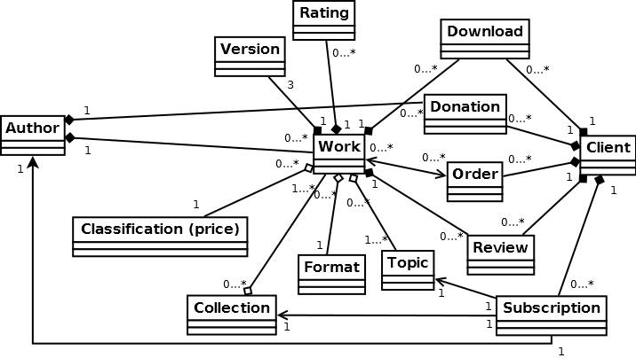
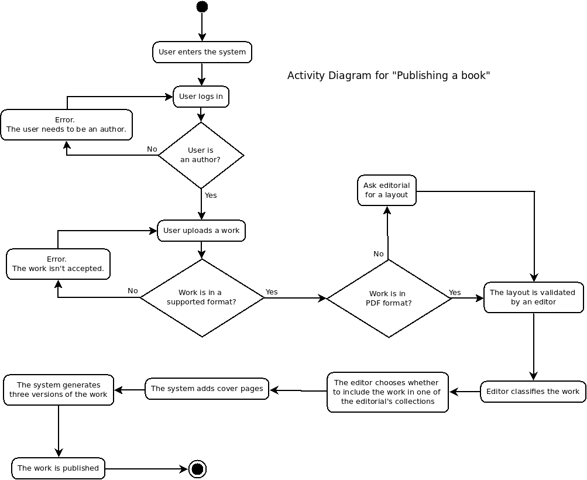
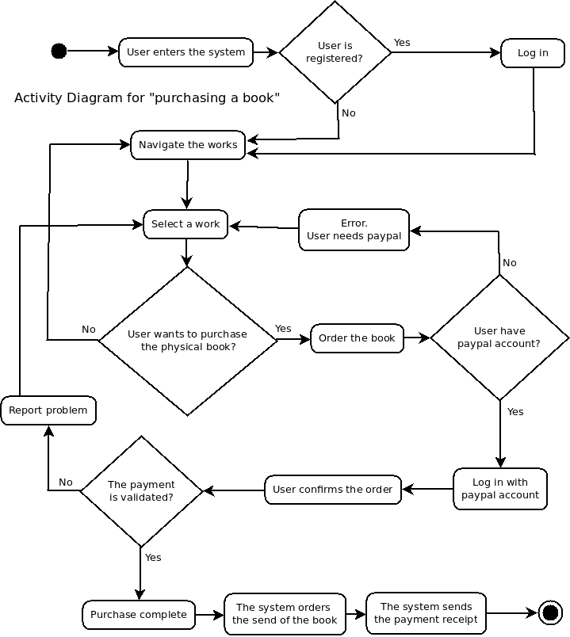
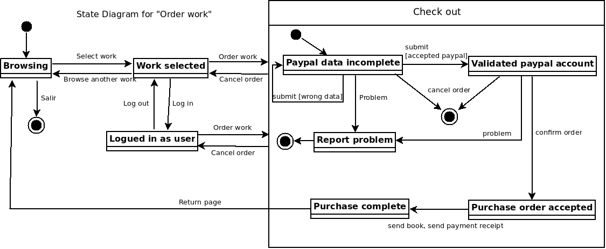
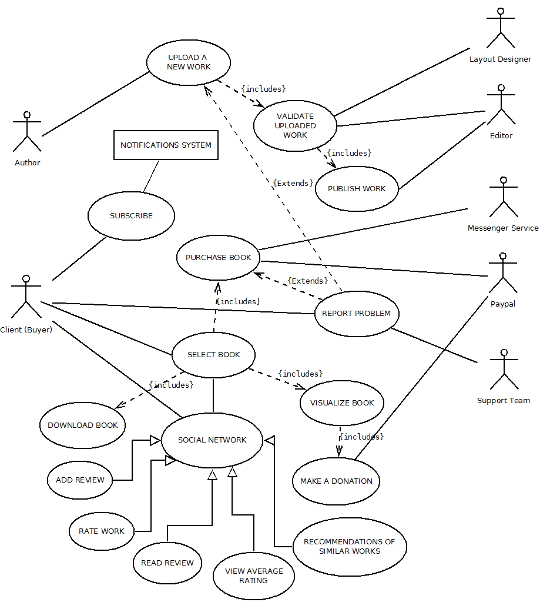

Alejandro Alvarez-Vijande NIA:158655 David Perez NIA:158690 1. Identify the stakeholders of the project. Small editorial (MeltingPot) Clients of the website (future users) Authors Editors (domain experts) Software Developers Software Maintainers Interviewed testers 2. Write a list of obscure points. -"Attractive page": the concept isn't enogh concrete for the developers, they don't know what they have to develop exacly. -"Editable material under the Creative Commons licence": We don't know what does this paragraph refers to. More detailed information about this subject would be appreciated. -“Payment Options": The payment options aren't correctly especified, we don't know wich options has someone to pay a book, or making a donation, etc "Social Network": We don't know how does social networks works in the website. How users interact we them, what they can like or share. Also we don't know if its a social network inside the webpage, so users can make friends with other users(costumers) "Subscriptions": The subscription system is not especified. The information that has to be send to the subscribed user is not clear. We don't know if it has to be an advertisement look like, or an extended explanation of whatelse.. 3. Write a glossary that defines the meaning of different expressions within the project. -"Editors": Employees of MeltingPot responsibles of editing the content uploaded to the website. -"Creative Commons Licence": A Creative Commons (CC) license is one of several public copyright licenses that enable the free distribution of an otherwise copyrighted work. A CC license is used when an author wants to give people the right to share, use and build upon a work that they have created. -"LaTeX": LaTeX is a document preparation system and document markup language. -"DocBook": DocBook is a semantic markup language for technical documentation. -"layout": An arrangement or a plan, especially the schematic arrangement of parts or areas. -“primary actors”: people who initiates the contact with the system. -“support actors”: people that are contacted by the system. -“basic flow”: Respresents the natural course of a group of actions to be performed by users. -“Diagram”: Is a two-dimensional representation of information. (We use the program dia to manage with it). Static-Analysis Diagram:  Activity Diagram:   State Diagram:  Other Domain Requirements: Our diagram expresses many detailed concepts related to domian requirements of our proyect that may passed unnoticed for an unexperienced user. For example, a work cannot be downloaded from a client if the work doesn't exists, or, a Client cannot subscript to many topics throght only one subscription. Next paragraphs detail other Domain Requirements that the developers must know while they will be developing the system: - Lyrics type: The text that will appear visible and readable to the clients must have a concrete type of letter, still undefined, but has to be literal-styled. - Correctly written sentences and also well constructed: Text over the platform that will be visible and readable cannot have any mistake related to the language in which it is written.  Use case: Purchase book Context: A user wants to buy a book Primary actors: User (Client that is buying a book) Support actors: Paypal (for payments), Messenger service (for delivery) Preconditions: The user can communicate with the system The user have the money needed for pay the book Successful postconditions: The user purchases the book . The system send a purchase confirmation to the user. Unsuccessful postconditions: The user can't buy the book Basic flow: 1. The user enter the website. 2. The user navigate or search in website. 3. The user selects a book. 4. The user orders to purchase the book. 5. The system contacts with payment service (paypal) and does the purchase transaction. 6. The system send the delivery order of the book (messenger service) 7. The system send a purchase confirmation to the user. 8. The user receive the book Extensions: 5.a. The system cannot do the transaction. 5.a.1. Execute the extension use case “Report problem”. 6.a. The system cannot send the delivery. 6.a.1. Execute the extension use case “Report problem”. 7.a. The system cannot send the purchase confirmation. 7.a.1. Execute the extension use case “Report problem”. 1-8.a. The user disconnects. 1-8.a.1. The connection is closed. Implied Stakeholders: Clients (buyers), Paypal, Messenger service, Domain experts, Editorial. Use case: Validate uploaded work Context: A author uploads a new work for be published Primary actors: User (Author that uploads a new book) Support actors: Layout designer, Editor Preconditions: The user can communicate with the system The book is in one of the supported formats. Successful postconditions: The new book is validated for be published. Unsuccessful postconditions: The new book is not validated for be published. Basic flow: 1. The user enter the website. 2. The user uploads a new work. 3. The system checks if the work is in one of the supported formats. 4. The system checks if the work is in PDF. 5. The layout design is validated by an editor. 6. The work is ready for be published. Extensions: 3.a. The work is not uploaded. 3.a.1. Execute the extension use case “Report problem”. 3.a. The work is not in a supported format. 3.a.1. Go to step 1. 4.a. If the work is not in PDF 4.a.1. The Author may ask for a layout to a layout designer in the editorial. 1-6.a. The user disconnects. 1-6.a.1. The connection is closed. Implied Stakeholders: Domain Experts, Authors, Editorial (Layout manager, Editor), Actors and Use cases of the system: Actors: Authors, Clients (Buyers), Paypal, Messenger service, Editor, Layout designer, Support team Use cases: Upload new work, Validate uploaded work, Publish work, Select book, Purchase book, Visualize book, Download book, Make a donation, Report problem, Subscribe, Social Network (like Add review, Rate work, Read review, View average rating, Recommendations of similar works). Relations: Authors iniciate Upload new work and derivatives. Clients (Buyers) iniciate Select book and derivatives, Report problem, Subscribe and Social Network and derivatives . Layout designer and Editor Validate uploaded work, Editor can Publish work too. Paypal acts in Purchase book and Make a donation. Messenger service only in Purchase book. Support team acts in Report problem.